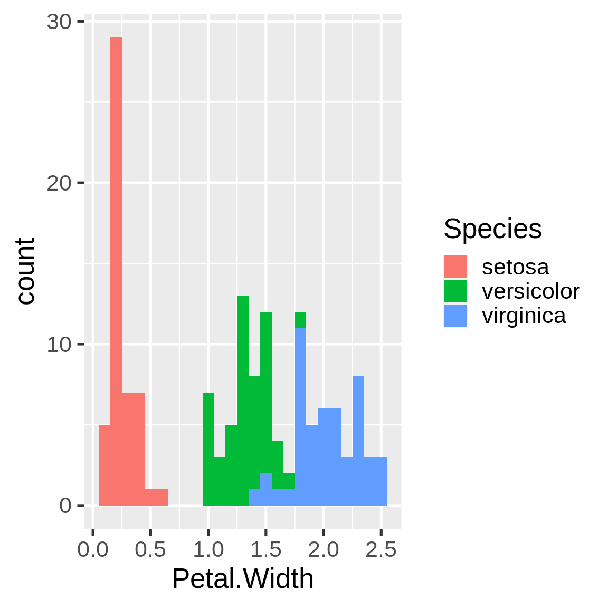
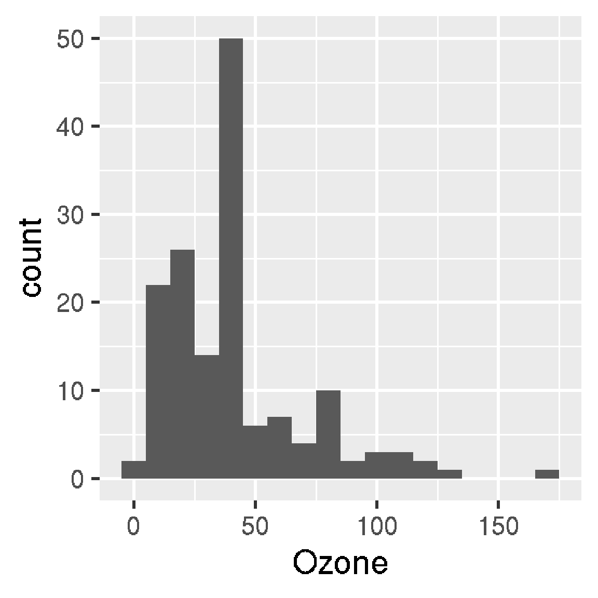

Chapter 4 drake plans
Most data analysis workflows consist of several steps, such as data cleaning, model fitting, visualization, and reporting. A drake plan is the high-level catalog of all these steps for a single workflow. It is the centerpiece of every drake-powered project, and it is always required. However, the plan is almost never the first thing we write. A typical plan rests on a foundation of carefully-crafted custom functions.
4.1 Functions
A function is a reusable instruction that accepts some inputs and returns a single output. After we define a function once, we can easily call it any number of times.
root_square_term <- function(l, w, h) {
half_w <- w / 2
l * sqrt(half_w ^ 2 + h ^ 2)
}
root_square_term(1, 2, 3)
#> [1] 3.162278
root_square_term(4, 5, 6)
#> [1] 26In practice, functions are vocabulary. They are concise references to complicated ideas, and they help us write instructions of ever increasing complexity.
# right rectangular pyramid
volume_pyramid <- function(length_base, width_base, height) {
area_base <- length_base * width_base
term1 <- root_square_term(length_base, width_base, height)
term2 <- root_square_term(width_base, length_base, height)
area_base + term1 + term2
}
volume_pyramid(3, 5, 7)
#> [1] 73.09366The root_square_term() function is custom shorthand that makes volume_pyramid() easier to write and understand. volume_pyramid(), in turn, helps us crudely approximate the total square meters of stone eroded from the Great Pyramid of Giza (dimensions from Wikipedia).
volume_original <- volume_pyramid(230.4, 230.4, 146.5)
volume_current <- volume_pyramid(230.4, 230.4, 138.8)
volume_original - volume_current # volume eroded
#> [1] 2760.183This function-oriented code is concise and clear. Contrast it with the cumbersome mountain of imperative arithmetic that would have otherwise daunted us.
# Don't try this at home!
width_original <- 230.4
length_original <- 230.4
height_original <- 146.5
# We supply the same lengths and widths,
# but we use different variable names
# to illustrate the general case.
width_current <- 230.4
length_current <- 230.4
height_current <- 138.8
area_original <- length_original * width_original
term1_original <- length_original *
sqrt((width_original / 2) ^ 2 + height_original ^ 2)
term2_original <- width_original *
sqrt((length_original / 2) ^ 2 + height_original ^ 2)
volume_original <- area_original + term1_original + term2_original
area_current <- length_current * width_current
term1_current <- length_current *
sqrt((width_current / 2) ^ 2 + height_current ^ 2)
term2_current <- width_current *
sqrt((length_current / 2) ^ 2 + height_current ^ 2)
volume_current <- area_current + term1_current + term2_current
volume_original - volume_current # volume eroded
#> [1] 2760.183Unlike imperative scripts, functions break down complex ideas into manageable pieces, and they gradually build up bigger and bigger pieces until an elegant solution materializes. This process of building up functions helps us think clearly, understand what we are doing, and explain our methods to others.
4.2 Intro to plans
A drake plan is a data frame with columns named target and command. Each row represents a step in the workflow. Each command is a concise expression that makes use of our functions, and each target is the return value of the command. (The target column has the names of the targets, not the values. These names must not conflict with the names of your functions or other global objects.)
We create plans with the drake_plan() function.
plan <- drake_plan(
raw_data = readxl::read_excel(file_in("raw_data.xlsx")),
data = raw_data %>%
mutate(Ozone = replace_na(Ozone, mean(Ozone, na.rm = TRUE))),
hist = create_plot(data),
fit = lm(Ozone ~ Wind + Temp, data),
report = rmarkdown::render(
knitr_in("report.Rmd"),
output_file = file_out("report.html"),
quiet = TRUE
)
)
plan
#> # A tibble: 5 x 2
#> target command
#> <chr> <expr_lst>
#> 1 raw_data readxl::read_excel(file_in("raw_data.xlsx")) …
#> 2 data raw_data %>% mutate(Ozone = replace_na(Ozone, mean(Ozone, na.rm = TR…
#> 3 hist create_plot(data) …
#> 4 fit lm(Ozone ~ Wind + Temp, data) …
#> 5 report rmarkdown::render(knitr_in("report.Rmd"), output_file = file_out("re…The plan makes use of a custom create_plot() function to produce target hist. Functions make the plan more concise and easier to read.
create_plot <- function(data) {
ggplot(data) +
geom_histogram(aes(x = Ozone)) +
theme_gray(24)
}drake automatically understands the relationships among targets in the plan. It knows data depends on raw_data because the symbol raw_data is mentioned in the command for data. drake represents this dependency relationship with an arrow from raw_data to data in the graph.
vis_drake_graph(plan)We can write the targets in any order and drake still understands the dependency relationships.
plan <- drake_plan(
raw_data = readxl::read_excel(file_in("raw_data.xlsx")),
data = raw_data %>%
mutate(Ozone = replace_na(Ozone, mean(Ozone, na.rm = TRUE))),
hist = create_plot(data),
fit = lm(Ozone ~ Wind + Temp, data),
report = rmarkdown::render(
knitr_in("report.Rmd"),
output_file = file_out("report.html"),
quiet = TRUE
)
)
vis_drake_graph(plan)The make() function runs the correct targets in the correct order and stores the results in a hidden cache.
library(drake)
library(glue)
library(purrr)
library(rlang)
library(tidyverse)
make(plan)
#> ▶ target raw_data
#> ▶ target data
#> ▶ target fit
#> ▶ target hist
#> ▶ target report
readd(hist)
#> `stat_bin()` using `bins = 30`. Pick better value with `binwidth`.
The purpose of the plan is to identify steps we can skip in our workflow. If we change some code or data, drake saves time by running some steps and skipping others.
create_plot <- function(data) {
ggplot(data) +
geom_histogram(aes(x = Ozone), binwidth = 10) + # new bin width
theme_gray(24)
}
vis_drake_graph(plan)make(plan)
#> ▶ target hist
#> ▶ target report
readd(hist)
4.3 A strategy for building up plans
Building a drake plan is a gradual process. You do not need to write out every single target to start with. Instead, start with just one or two targets: for example, raw_data in the plan above. Then, make() the plan and inspect the results with readd(). If the target’s return value seems correct to you, go ahead and write another target in the plan (data), make() the bigger plan, and repeat. These repetitive make()s should skip previous work each time, and you will have an intuitive sense of the results as you go.
4.4 How to choose good targets
Defining good targets is more of an art than a science, and it requires personal judgement and context specific to your use case. Generally speaking, a good target is
- Long enough to eat up a decent chunk of runtime, and
- Small enough that
make()frequently skips it, and - Meaningful to your project, and
- A well-behaved R object compatible with
saveRDS(). For example, data frames behave better than database connection objects (discussions here and here), R6 classes, andxgboostmatrices.
Above, “long” and “short” refer to computational runtime, not the size of the target’s value. The more data you return to the targets, the more data drake puts in storage, and the slower your workflow becomes. If you have a large dataset, it may not be wise to copy it over several targets.
bad_plan <- drake_plan(
raw = get_big_raw_dataset(), # We write this ourselves.
selection = select(raw, column1, column2),
filtered = filter(selection, column3 == "abc"),
analysis = my_analysis_function(filtered) # Same here.
)In the above sketch, the dataset is super large, and selection and filtering are fast by comparison. It is much better to wrap up these steps in a data cleaning function and reduce the number of targets.
munged_dataset <- function() {
get_big_raw_dataset() %>%
select(column1, column2) %>%
filter(column3 == "abc")
}
good_plan <- drake_plan(
dataset = munged_dataset(),
analysis = my_analysis_function(dataset)
)4.5 Special data formats for targets
drake supports custom formats for saving and loading large objects and highly specialized objects. For example, the "fst" and "fst_tbl" formats use the fst package to save data.frame and tibble targets faster. Simply enclose the command and the format together with the target() function.
library(drake)
n <- 1e8 # Each target is 1.6 GB in memory.
plan <- drake_plan(
data_fst = target(
data.frame(x = runif(n), y = runif(n)),
format = "fst"
),
data_old = data.frame(x = runif(n), y = runif(n))
)
make(plan)
#> target data_fst
#> target data_old
build_times(type = "build")
#> # A tibble: 2 x 4
#> target elapsed user system
#> <chr> <Duration> <Duration> <Duration>
#> 1 data_fst 13.93s 37.562s 7.954s
#> 2 data_old 184s (~3.07 minutes) 177s (~2.95 minutes) 4.157sThere are several formats, each with their own system requirements. These system requirements, such as the fst R package for the "fst" format, do not come pre-installed with drake. You will need to install them manually.
"file": Dynamic files. To use this format, simply create local files and directories yourself and then return a character vector of paths as the target’s value. Then,drakewill watch for changes to those files in subsequent calls tomake(). This is a more flexible alternative tofile_in()andfile_out(), and it is compatible with dynamic branching. See https://github.com/ropensci/drake/pull/1178 for an example."fst": save big data frames fast. Requires thefstpackage. Note: this format strips non-data-frame attributes such as the"fst_tbl": Like"fst", but fortibbleobjects. Requires thefstandtibblepackages. Strips away non-data-frame non-tibble attributes."fst_dt": Like"fst"format, but fordata.tableobjects. Requires thefstanddata.tablepackages. Strips away non-data-frame non-data-table attributes."diskframe": Storesdisk.frameobjects, which could potentially be larger than memory. Requires thefstanddisk.framepackages. Coerces objects todisk.frames. Note:disk.frameobjects get moved to thedrakecache (a subfolder of.drake/for most workflows). To ensure this data transfer is fast, it is best to save yourdisk.frameobjects to the same physical storage drive as thedrakecache,as.disk.frame(your_dataset, outdir = drake_tempfile())."keras": save Keras models as HDF5 files. Requires thekeraspackage."qs": save any R object that can be properly serialized with theqspackage. Requires theqspackage. Usesqsave()andqread(). Uses the default settings inqsversion 0.20.2."rds": save any R object that can be properly serialized. Requires R version >= 3.5.0 due to ALTREP. Note: the"rds"format uses gzip compression, which is slow."qs"is a superior format.
4.6 Special columns
With target(), you can define any kind of special column in the plan.
drake_plan(
x = target((1 + sqrt(5)) / 2, golden = "ratio"),
y = target(pi * 3 ^ 2, area = "circle")
)
#> # A tibble: 2 x 4
#> target command golden area
#> <chr> <expr_lst> <chr> <chr>
#> 1 x (1 + sqrt(5))/2 ratio <NA>
#> 2 y pi * 3^2 <NA> circleThe following columns have special meanings, and make() reads and interprets them.
format: already described above.dynamic: See the chapter on dynamic branching.transform: Automatically processed bydrake_plan()except fordrake_plan(transform = FALSE). See the chapter on static branching.trigger: rule to decide whether a target needs to run. See the trigger chapter to learn more.elapsedandcpu: number of seconds to wait for the target to build before timing out (elapsedfor elapsed time andcpufor CPU time).hpc: logical values (TRUE/FALSE/NA) whether to send each target to parallel workers. Click here to learn more.resources: target-specific lists of resources for a computing cluster. See the advanced options in the parallel computing chapter for details.caching: overrides thecachingargument ofmake()for each target individually. Only supported indrakeversion 7.6.1.9000 and above. Possible values:- “main”: tell the main process to store the target in the cache.
- “worker”: tell the HPC worker to store the target in the cache.
- NA: default to the
cachingargument ofmake().
retries: number of times to retry building a target in the event of an error.seed: For statistical reproducibility,drakeautomatically assigns a unique pseudo-random number generator (RNG) seed to each target based on the target name and the globalseedargument tomake(). With theseedcolumn of the plan, you can override these default seeds and set your own. Any non-missing seeds in theseedcolumn overridedrake’s default target seeds.max_expand: for dynamic branching only. Same as themax_expandargument of [make()], but on a target-by-target basis. Limits the number of sub-targets created for a given target. Only supported indrake>= 7.11.0.
4.7 Static files
drake has special functions to declare relationships between targets and external storage on disk. file_in() is for input files and directories, file_out() is for output files and directories, and knitr_in() is for R Markdown reports and knitr source files. If you use one of these functions inline in the plan, it tells drake to rerun a target when a file changes (or any of the files in a directory).
All three functions appear in this plan.
plan
#> # A tibble: 5 x 2
#> target command
#> <chr> <expr_lst>
#> 1 raw_data readxl::read_excel(file_in("raw_data.xlsx")) …
#> 2 data raw_data %>% mutate(Ozone = replace_na(Ozone, mean(Ozone, na.rm = TR…
#> 3 hist create_plot(data) …
#> 4 fit lm(Ozone ~ Wind + Temp, data) …
#> 5 report rmarkdown::render(knitr_in("report.Rmd"), output_file = file_out("re…If we break the file_out() file, drake automatically repairs it.
unlink("report.html")
make(plan)
#> ▶ target report
file.exists("report.html")
#> [1] TRUEAs for knitr_in(), recall what happened when we changed the create_plot(). Not only did hist rerun, report ran as well. Why? Because knitr_in() is special. It tells drake to look for mentions of loadd() and readd() in the code chunks. drake finds the targets you mention in those loadd() and readd() calls and treats them as dependencies of the report. This lets you choose to run the report either inside or outside a drake pipeline.
cat(readLines("report.Rmd"), sep = "\n")
#> ---
#> title: "Example R Markdown drake file target"
#> author: Will Landau and Kirill Müller
#> output: html_document
#> ---
#>
#> Run `make.R` to generate the output `report.pdf` and its dependencies. Because we use `loadd()` and `readd()` below, `drake` knows `report.pdf` depends on targets `fit`, and `hist`.
#>
#> ```{r content}
#> library(drake)
#> loadd(fit)
#> print(fit)
#> readd(hist)
#> ```
#>
#> More:
#>
#> - Walkthrough: [this chapter of the user manual](https://books.ropensci.org/drake/walkthrough.html)
#> - Code: `drake_example("main")`That is why we have an arrow from hist to report in the graph.
vis_drake_graph(plan)4.7.1 URLs
file_in() understands URLs. If you supply a string beginning with http://, https://, or ftp://, drake watches the HTTP ETag, file size, and timestamp for changes.
drake_plan(
external_data = download.file(file_in("http://example.com/file.zip"))
)
#> # A tibble: 1 x 2
#> target command
#> <chr> <expr_lst>
#> 1 external_data download.file(file_in("http://example.com/file.zip"))4.7.2 Limitations of static files
4.7.2.1 Paths must be literal strings
file_in(), file_out(), and knitr_in() require you to mention file and directory names explicitly. You cannot use a variable containing the name of a file. The reason is that drake detects dependency relationships with static code analysis. In other words, drake needs to know the names of all your files ahead of time (before we start building targets in make()). Here is an example of a bad plan.
prefix <- "eco_"
bad_plan <- drake_plan(
data = read_csv(file_in(paste0(prefix, "data.csv")))
)
vis_drake_graph(bad_plan)
#> Warning: Detected file_in(paste0(prefix, "data.csv")). File paths in
#> file_in(), file_out(), and knitr_in() must be literal strings, not
#> variables. For example, file_in("file1.csv", "file2.csv") is legal, but
#> file_in(paste0(filename_variable, ".csv")) is not. Details: https://
#> books.ropensci.org/drake/plans.html#static-filesInstead, write this:
good_plan <- drake_plan(
file = read_csv(file_in("eco_data.csv"))
)
vis_drake_graph(good_plan)Or even the one below, which uses the !! (“bang-bang”) tidy evaluation unquoting operator.
prefix <- "eco_"
drake_plan(
file = read_csv(file_in(!!paste0(prefix, "data.csv")))
)
#> # A tibble: 1 x 2
#> target command
#> <chr> <expr_lst>
#> 1 file read_csv(file_in("eco_data.csv"))4.7.2.2 Do not use inside functions
file_out() and knitr_in() should not be used inside imported functions because drake does not know how to deal with functions that depend on targets. Instead of this:
f <- function() {
render(knitr_in("report.Rmd"), output_file = file_out("report.html"))
}
plan <- drake_plan(
y = f()
)Write this:
plan <- drake_plan(
y = render(knitr_in("report.Rmd"), output_file = file_out("report.html"))
)Or this:
f <- function(input, output) {
render(input, output_file = output)
}
plan <- drake_plan(
y = f(input = knitr_in("report.Rmd"), output = file_out("report.html"))
)file_in() can be used inside functions, but only for files that exist before you call make().
4.7.2.3 Incompatible with dynamic branching
file_out() and knitr_in() deal with static output files, so they must not be used with dynamic branching. As an alternative, consider dynamic files (described below). You can still use file_in(), but only for files that all the dynamic sub-targets depend on. (Changing a static input file dependency will invalidate all the sub-targets.)
4.7.2.4 Database connections
file_in() and friends do not help us manage database connections. If you work with a database, the most general best practice is to always trigger a snapshot to make sure you have the latest data.
plan <- drake_plan(
data = target(
get_data_from_db("my_table"), # Define yourself.
trigger = trigger(condition = TRUE) # Always runs.
),
preprocess = my_preprocessing(data) # Runs when the data change.
)In specific use cases, you may be able to watch database metadata for changes, but this information is situation-specific.
library(DBI)
# Connection objects are brittle, so they should not be targets.
# We define them up front, and we use ignore() to prevent
# drake from rerunning targets when the connection object changes.
con <- dbConnect(...)
plan <- drake_plan(
data = target(
dbReadTable(ignore(con), "my_table"), # Use ignore() for db connection objects.
trigger = trigger(change = somehow_get_db_timestamp()) # Define yourself.
),
preprocess = my_preprocessing(data) # runs when the data change
)4.8 Dynamic files
drake >= 7.11.0 supports dynamic files through a specialized format. With dynamic files, drake can watch local files without knowing them in advance. This is a more flexible alternative to file_out() and file_in(), and it is fully compatible with dynamic branching.
4.8.1 How to use dynamic files
- Set format = “file” in target() within drake_plan().
- Return the paths to local files from the target.
- To link targets together in dependency relationships, reference target names and not literal character strings.
4.8.2 Example of dynamic files
bad_plan <- drake_plan(
upstream = target({
writeLines("one line", "my file") # Make sure the file exists.
"my file" # Must return the file path.
},
format = "file" # Necessary for dynamic files
),
downstream = readLines("my file") # Oops!
)
plot(bad_plan)4.8.3 Limitations of dynamic files
Unlike file_in(), dynamic files cannot handle URLs. All files and directories must have valid local paths.
4.9 Large plans
drake has special interfaces to concisely define large numbers of targets. See the chapters on static branching and dynamic branching for details.